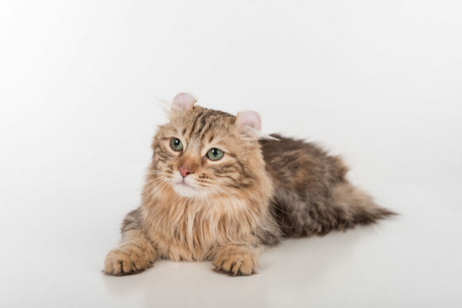
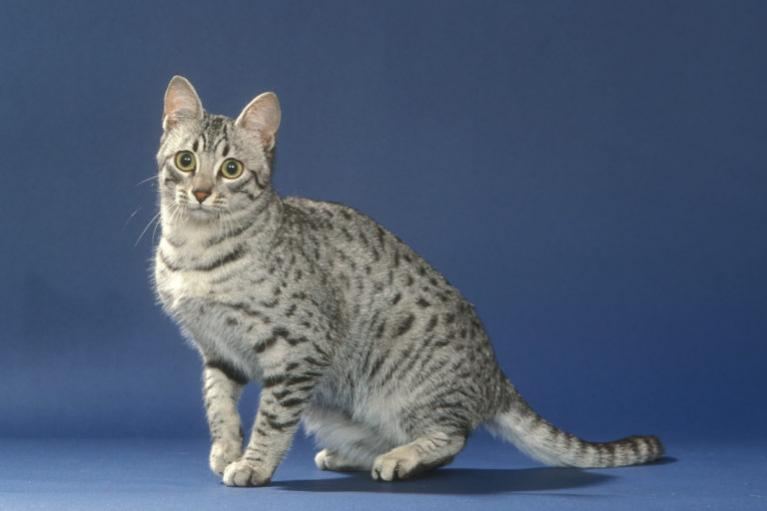

Amerykański Curl
American Curl to kocia rasa przyciągająca wzrok: niezwykłe uszy kotów tej rasy to niecodzienny widok. W ich charakterach widoczna jest z kolei wyraźnie spuścizna kotów domowych – są grzeczne, aktywne i przyjazne dla ludzi.
Angora turecka

Wielu wielbicieli i znawców kotów twierdzi, że angora turecka to najstarsza rasa kotów na świecie. Skąd wzięła się ta opinia i czym angory oczarowują swoich miłośników na całym świecie?
Egipski mau
Według Leonarda da Vinci podobno każdy kot był arcydziełem. Artysta miał na myśli zapewne kolektyw kotów, jednak dziś za arcydzieło wśród kocich ras uważana jest najczęściej rasa egipski mau. Ten piękny, przyciągający wzrok krótkowłosy kot o zapierających dech intensywnie zielonych tęczówkach rozwinął się, jak wskazuje już sama jego nazwa, na terenie Egiptu.